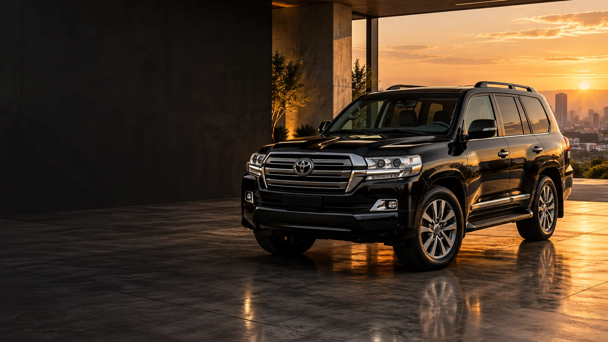
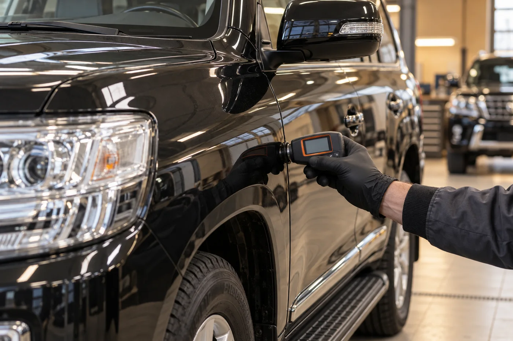
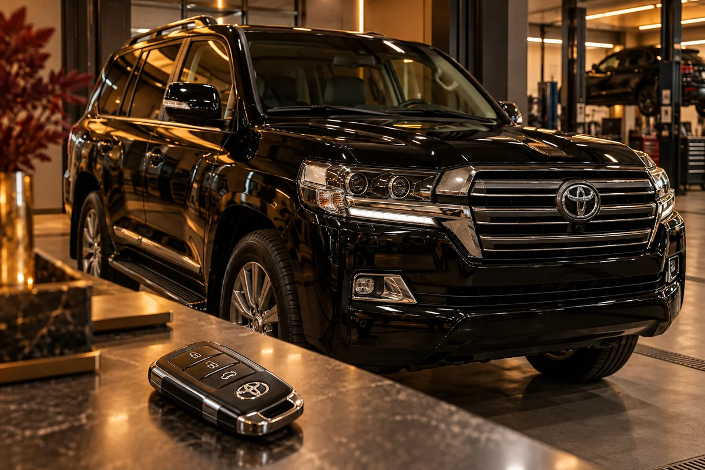
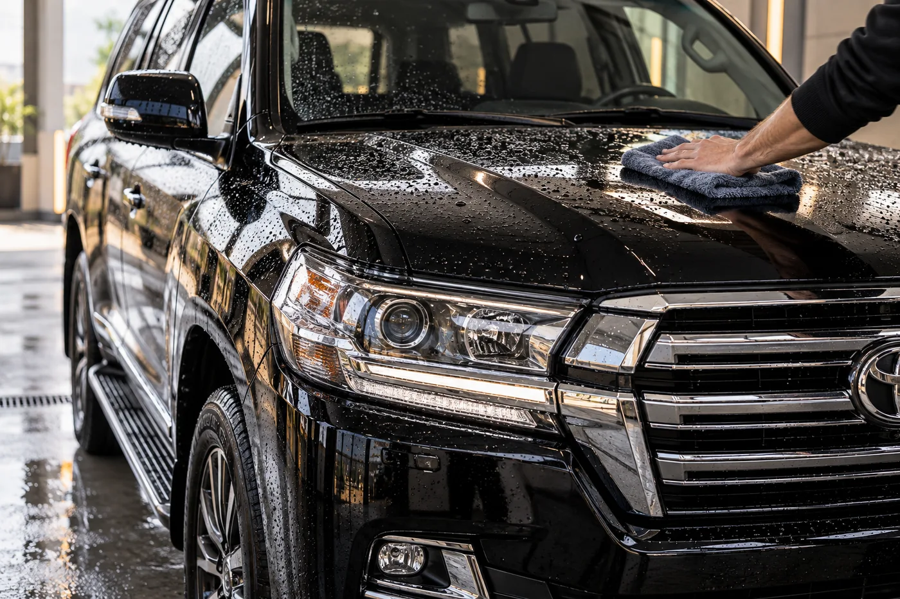

Купить. Продать.Позаботиться.
Выкуп, подбор и автомобили под заказ.
Автоняня, мойка и услуги водителя.
От выбора автомобиля
до заботы о нём.
Выберите услугу.
Детали и условия обсудим лично.
Выкуп автомобиля
Расскажите о машине.
Начнём с предварительной оценки.

Подбор и проверка
Выбор автомобиля и осмотр
перед покупкой.

Автоняня
Отвезём автомобиль
на обслуживание.
Найдём ваш вариант.
Модель, комплектация и бюджет —
отправная точка для разговора.

Мойка автомобиля
Обсудим формат мойки
и удобное время.

Передайте управление.
Обсудим вашу поездку.
Укажите маршрут, время и автомобиль.
Фотографии — иллюстрации услуг. Наличие автомобилей и условия уточняйте при обращении.
Отвезём
на обслуживание.
Вы займётесь своим.
Когда автомобиль требует внимания, а день уже расписан. Расскажите, что нужно сделать — обсудим доставку и детали услуги.
Обсудить обслуживаниеВаша задача
Что нужно автомобилю и где он находится.
Условия заранее
Маршрут, время, состав услуги и стоимость.
Следующий шаг
Согласуем порядок передачи и доставки.
Понятные детали.
Спокойное решение.
Как узнать стоимость?
Расскажите о задаче. Стоимость зависит от автомобиля, состава услуги, маршрута и других деталей. Обсудим её до начала работ.
Можно заказать несколько услуг?
Да, можно обсудить несколько задач в одном обращении. Напишите, что нужно: например, доставка на обслуживание и мойка. Возможность и условия согласуются отдельно.
Сообщение подтверждает запись?
Сообщение — начало разговора. Время мойки, осмотра или выезда водителя подтверждается после согласования с Романом.
На связи — Роман.
Выберите удобный способ. Начнём с автомобиля, маршрута или нужной услуги.